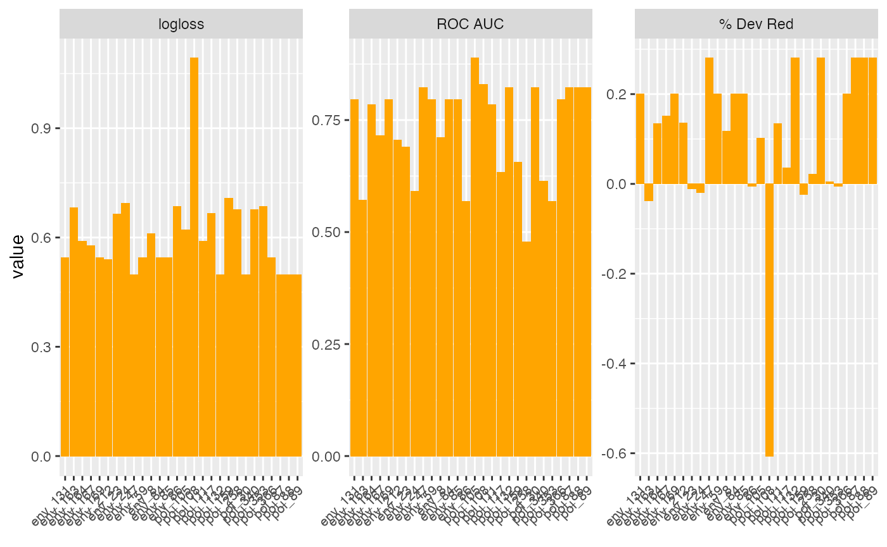
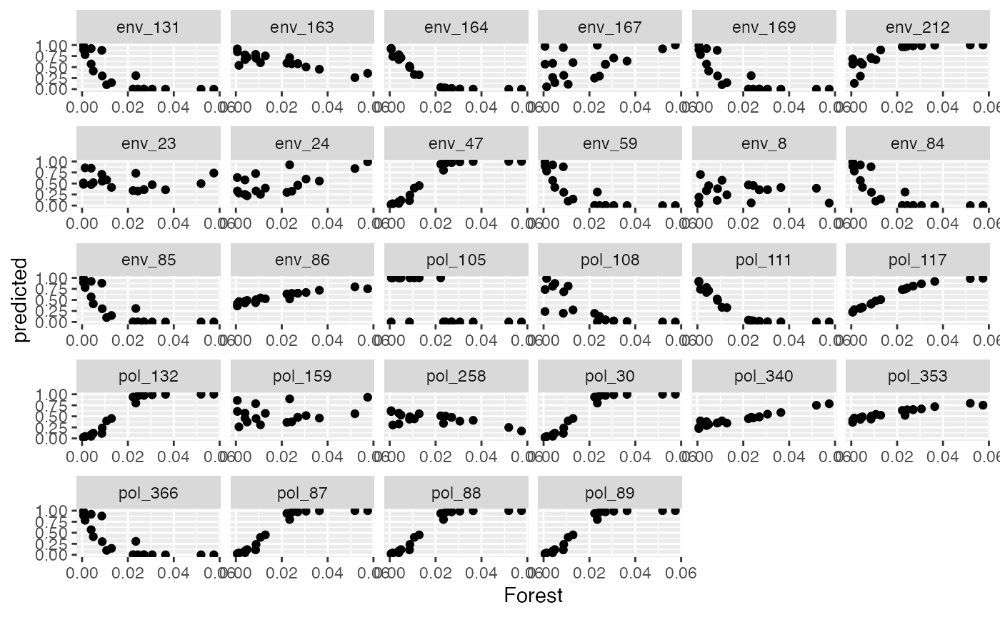
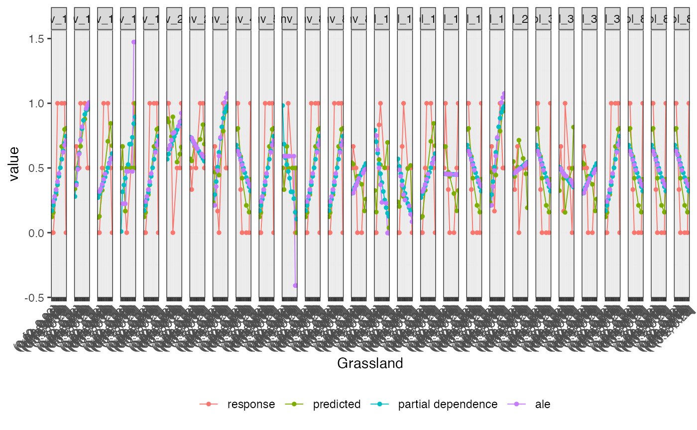
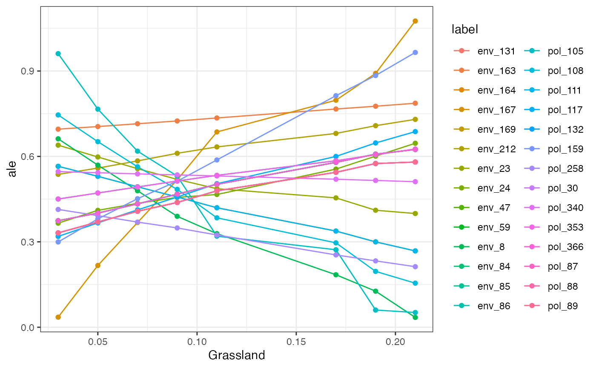
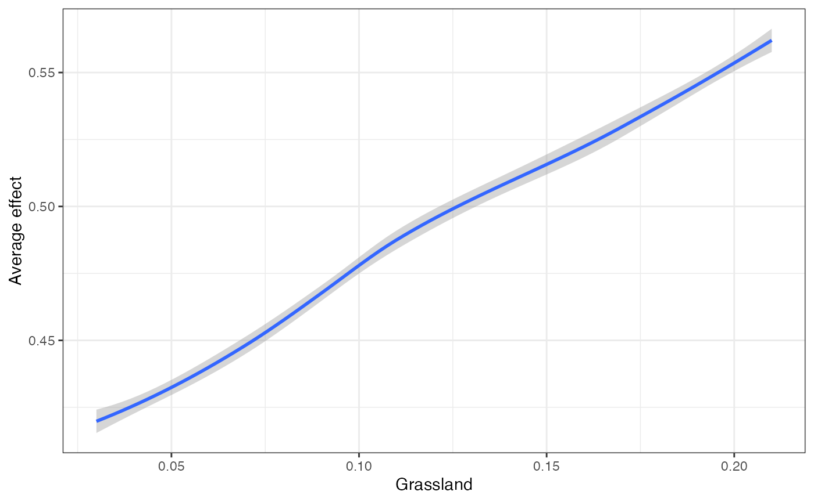
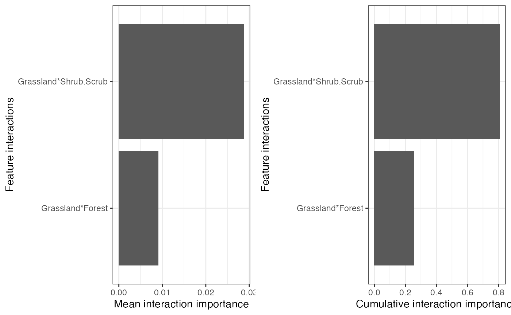
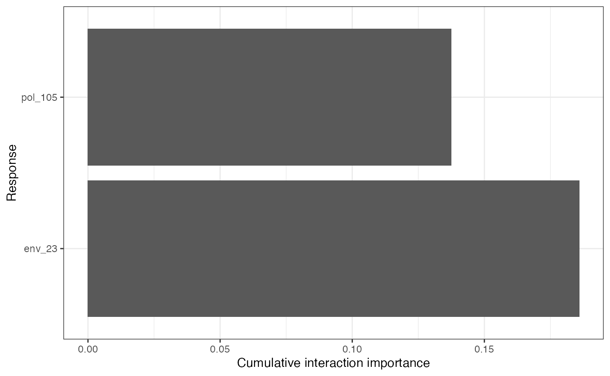
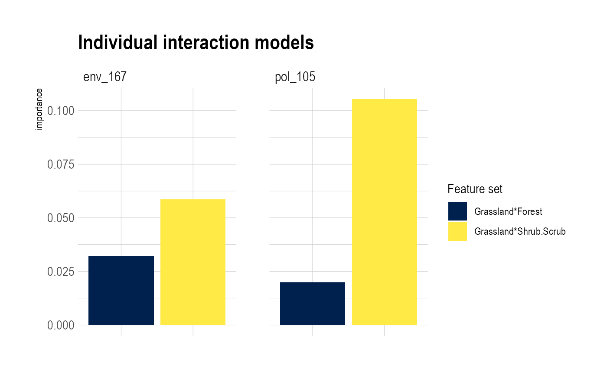

vignettes/Vignette_LandscapeGenetics.Rmd
Vignette_LandscapeGenetics.RmdMrIML is a R package allows users to generate and interpret multi-response models (i.e., joint species distribution models) leveraging advances in data science and machine learning. MrIML couples the tidymodel infrastructure developed by Max Kuhn and colleagues with model agnostic interpretable machine learning tools to gain insights into multiple response data such as. As such mrIML is flexible and easily extendable allowing users to construct everything from simple linear models to tree-based methods for each response using the same syntax and same way to compare predictive performance. In this vignette we will guide you through how to apply this package to landscape genetics problems but keep in mind any multiple-response data can be interrogated using this package (e.g., species or OTU presence/absence data).
Let’s start by loading the required packages and data. The data we are going to use is from Fountain-Jones etal (2017) and consists of single nucleotide polymorphism (SNP) data from a virus (feline immunodeficiency virus, FIV) infecting bobcats in Southern California.
Features (a.k.a predictor variables) with missing data can be removed or interpolated depending on the nature of the missing data. Here we remove them.
When constructing these type of models, SNPs that are common (occur say in >80% of samples) or rare (< 10% of samples) are difficult to model. This cn be a problem for potentially adaptice loci which tend to be rarer We provide down-sampling or up-sampling strategies for dealing with unbalanced data (see below) but filtering out common and rare loci is another option. The more response variables (SNPs) you include the longer the computational time, so for this example we will trim SNPs occurring in < 40% and > 70% of individuals. This leaves 29 SNPs remaining. In practice, these filtering steps are stringent so < 20 and > 80 maybe more appropriate.
#Optional: Filter rare/common SNPs or species. Retaining minor allele frequencies >0.1 and removing common alleles (occur>0.9)
fData <- filterRareCommon (Responsedata, lower=0.4, higher=0.7)
X <- fData #for simplicity when comparing
X <- X[,-9] #for simplicity when comparing
#another option at this stage is to filter response that are strongly correlated with each other.
#df2 <- cor(X) #find correlations
#hc <- findCorrelation(df2, cutoff=0.5) # put any value as a "cutoff".
#hc <- sort(hc)
#X <- X[,-c(hc)] #If your feature data consists of landscape resistance data generated from Circuitscape or similar, we provide functionality that can extract each surface from a folder and generate resistance components that can be used in these models (using principal coordinate analysis). This data can be easily merged if needs be with other non-matrix data (e.g., age/sex). There was no resistance surfaces here, but this is what the code looks like:
#R <- resist_components(filename = 'location of pairwise matrices', p_val=0.01 ) # p values are used here to filter resistance components that aren't correlated with th original pairwise matrix.
#Y <- cbind(R,Y)Now all the data is loaded and ready to go we can formulate the model using tidymodel syntax. In this case we have binary data (SNP presence/absence at each loci) but the data could also be counts or continuous (the set_model argument would be “regression” instead of “classification”). The user can specify any model from the tidymodel universe as ‘model 1’ (see https://www.tidymodels.org/find/ for details). However, we have done most of our testing on random forests (rf), xgr boost and glms (generalized linear models). Here we will specify a random forest classification model as the model applied to each response.
model1 <-
rand_forest(trees = 100, mtry=tune(), min_n = tune(), mode = "classification") %>% #100 trees are set for brevity
# select the engine/package that underlies the model
set_engine("ranger", importance = c("impurity","impurity_corrected")) %>%
# choose either the continuous regression or binary classification mode
set_mode("classification")Now we can run the model. Hyper parameter tuning (for algorithms that have hyper parameters) is done automatically by testing how model performance changes across a random grid of 10 parameters and the best performing combination is kept. Notice for random forests we have two hyperparamters to tune; mtry (number of features to randomly include at each split) and min_n (the minimum number of data points in a node that are required for the node to be split further). The syntax ‘tune()’ acts a placeholder to tell MrIML to tune those hyperparamters across a grid of values (defined in MRIML predicts ‘tune_grid_size’ argument). Different algorithms will have different hyperparameters. See https://www.tidymodels.org/find/parsnip/ for parameter details. Note that large grid sizes (>10) for algorithms with lots of hyperparameters (such as extreme gradient boosting) will be computationally demanding. In this case we choose a grid size of 5. The only choice to make is to either down/up sample data or leave it as is. As our viral data set is small, we will not do any up or down-sampling (option ‘no’). We could also implement parallel processing for larger data sets.
yhats <- mrIMLpredicts(X=X,Y=Y, model1=model1, balance_data='no', mode='classification', parallel = FALSE, tune_grid_size= 10, seed = sample.int(1e8, 1)) ## in MrTidymodels. Balanced data= up updamples and down downsampled to create a balanced set
# save the model
#save(yhats, file='rf_model')It takes a couple of minutes to run on a laptop and there are warnings that you can ignore (this data set is small). The above code constructs tuned random forest models for the features (Y) you have selected for each response (29 viral SNP in this case). We can then check the performance of each model separately and overall. The performance metrics we provide for classification models are area under curve (roc_AUC), Mathew’s correlation coefficient (MCC - a good metric when data is imbalanced i.e., unequal numbers of 0/1s in each response), specificity (proportion correctly classified not having the mutation at that loci) and sensitivity (proportion correctly classified having the mutation at that loci). We also provide ‘prevalence’ that tells you how common that SNP was in the population sampled.
ModelPerf <- mrIMLperformance(yhats, model1, X=X, model='classification')
ModelPerf[[1]] #predictive performance for individual responses
#> response model_name roc_AUC mcc sensitivity
#> 1 env_131 rand_forest 1 0.408248290463863 1
#> 2 env_163 rand_forest 0.5 <NA> 0
#> 3 env_164 rand_forest 0.833333333333333 0.666666666666667 0.666666666666667
#> 4 env_167 rand_forest 0.583333333333333 -0.166666666666667 0.5
#> 5 env_169 rand_forest 1 0.408248290463863 1
#> 6 env_212 rand_forest 1 <NA> 0
#> 7 env_23 rand_forest 0.333333333333333 0.166666666666667 0.5
#> 8 env_24 rand_forest 0.5 0.408248290463863 0.333333333333333
#> 9 env_47 rand_forest 1 1 1
#> 10 env_59 rand_forest 1 0.408248290463863 1
#> 11 env_8 rand_forest 0.25 -0.408248290463863 0.666666666666667
#> 12 env_84 rand_forest 1 0.408248290463863 1
#> 13 env_85 rand_forest 1 0.408248290463863 1
#> 14 env_86 rand_forest 0.5 0.166666666666667 0.666666666666667
#> 15 pol_105 rand_forest 1 0.666666666666667 0.666666666666667
#> 16 pol_108 rand_forest 1 1 1
#> 17 pol_111 rand_forest 0.833333333333333 0.666666666666667 0.666666666666667
#> 18 pol_117 rand_forest 0.75 0.166666666666667 0.666666666666667
#> 19 pol_132 rand_forest 1 1 1
#> 20 pol_159 rand_forest 0.166666666666667 -0.408248290463863 0
#> 21 pol_258 rand_forest 0.5 <NA> 1
#> 22 pol_30 rand_forest 1 1 1
#> 23 pol_340 rand_forest 0.5 <NA> 1
#> 24 pol_353 rand_forest 0.5 0.166666666666667 0.666666666666667
#> 25 pol_366 rand_forest 1 0.408248290463863 1
#> 26 pol_87 rand_forest 1 1 1
#> 27 pol_88 rand_forest 1 1 1
#> 28 pol_89 rand_forest 1 1 1
#> specificity prevalence
#> 1 0.333333333333333 0.421052631578947
#> 2 1 0.631578947368421
#> 3 1 0.421052631578947
#> 4 0.333333333333333 0.421052631578947
#> 5 0.333333333333333 0.421052631578947
#> 6 1 0.684210526315789
#> 7 0.666666666666667 0.631578947368421
#> 8 1 0.421052631578947
#> 9 1 0.473684210526316
#> 10 0.333333333333333 0.421052631578947
#> 11 0 0.473684210526316
#> 12 0.333333333333333 0.421052631578947
#> 13 0.333333333333333 0.421052631578947
#> 14 0.5 0.421052631578947
#> 15 1 0.473684210526316
#> 16 1 0.421052631578947
#> 17 1 0.421052631578947
#> 18 0.5 0.473684210526316
#> 19 1 0.473684210526316
#> 20 0.666666666666667 0.473684210526316
#> 21 0 0.473684210526316
#> 22 1 0.473684210526316
#> 23 0 0.421052631578947
#> 24 0.5 0.421052631578947
#> 25 0.333333333333333 0.421052631578947
#> 26 1 0.473684210526316
#> 27 1 0.473684210526316
#> 28 1 0.473684210526316
ModelPerf[[2]]#overall predictive performance
#> [1] 0.7767857You can compare the predictive performance of random forests with any other technique simply by altering the following. Lets try a logistic regression - no tuning of hyperparamters required. Note that for logistic regression you may need to scale/transform the data or create dummy variables if you include categorical variables. These steps can easily be added to the pipeline following tidymodel syntax (see the website above)
model1 <- #model used to generate yhat
logistic_reg() %>%
set_engine("glm") %>%
set_mode("classification")
yhats <- mrIMLpredicts(X=X,Y=Y, model1=model1, balance_data='no', mod='classification', parallel = TRUE, seed = sample.int(1e8, 1))
#save(yhats, file='logreg_model')
ModelPerf <- mrIMLperformance(yhats, model1, X=X) #
ModelPerf[[2]]
#> [1] 0.5357143You can see that the random forests model outperforms the logistic regression in this case. Once we are happy with the underlying model we can then dive in to see how this model predicts the SNPs. First we can check out variable importance.The first plot is the global importance (what features shape genetic change overall), the second shows the individual models (with an optional importance MCC threshold ‘cutoff’ value ) and the third plots the importances of all models as a PCA. SNPs or responses closer together in PCA space are shaped more similarly by landscape variables (or in other words have similar feature variable importance scores).
VI <- mrVip(yhats, Y=Y)
#plot_vi(VI=VI,X=X, Y=Y, modelPerf=ModelPerf, cutoff= 0, plot.pca='yes', model='classification') #the cutoff reduces the number of individual models printed in the second plot. If your features can be grouped together this can make it easier to interpret variable importance plots.
groupCov <- c(rep ("Host_characteristics", 1),rep("Urbanisation", 3), rep("Vegetation", 2), rep("Urbanisation",1), rep("Spatial", 2), rep('Host_relatedness', 6),rep ("Host_characteristics", 1),rep("Vegetation", 2), rep("Urbanisation",1))
#plot_vi(VI=VI, X=X,Y=Y, modelPerf=ModelPerf, groupCov=groupCov, cutoff= 0.5, plot.pca='no')MrIML allows a full suite of model agnostic interpretable machine learning tools to be applied to individual models or the ‘global’ set. We utilize the R package flashlight which offers an exciting and ever growing tool set to interpret these models: https://cran.r-project.org/web/packages/flashlight/vignettes/flashlight.html
For example, once we create the flashlight objects, we can plot the predicted values of a feature for each response.
fl <- mrFlashlight(yhats, X, Y, response = "multi", index=1, model='classification') #index pointing to the SNP of interest (i.e. the first column)
plot(light_performance(fl), fill = "orange", rotate_x = TRUE) +
labs(x = element_blank()) +
theme(axis.text.x = element_text(size = 8))
We also wrap some flashlight functionality to visualize the marginal (i.e. partial dependencies) or conditional (accumulated local effects) effect of a feature on genetic change. Partial dependencies take longer to calculate and are more sensitive to correlated features. The first plot You can see here that they can get different results based on which plot you use. ALE plots are a better option if your feature set is even moderately impacted by collinearity ( e.g., ., rho = 0.6). The second plot is the overall smoothed genetic-turnover function.
When running this code yourself, you need to change ‘v’ to the variable of interest within your Y dataset.In this case we are looking at how grassland shapes genetic turnover.
flashlightObj <- mrFlashlight(yhats, X, Y, response = "multi", model='classification')
#plot prediction scatter for all responses. Gets busy with
plot(light_scatter(flashlightObj, v = "Forest", type = "predicted"))
#plots everything on one plot (partial dependency, ALE, scatter)
plot(light_effects(flashlightObj, v = "Grassland"), use = "all")
#profileData_pd <- light_profile(flashlightObj, v = "Grassland")
#mrProfileplot(profileData_pd , sdthresh =0.05) #sdthresh removes responses from the first plot that do not vary with the feature
profileData_ale <- light_profile(flashlightObj, v = "Grassland", type = "ale") #acumulated local effects
mrProfileplot(profileData_ale , sdthresh =0.01)
#the second plot is the cumulative turnover functionFinally, we can assess how features interact overall to shape genetic change. Be warned this is memory intensive. Future updates to this package will enable users to visualize these interactions and explore them in more detail using 2D ALE plots for example.
interactions <-mrInteractions(yhats, X, Y, mod='classification') #this is computationally intensive so multicores are needed. If stopped prematurely - have to reload things
mrPlot_interactions(interactions, X,Y, top_ranking = 2, top_response=2)
#> Press [enter] to continue for response with strongest interactions
#> Press [enter] to continue for individual response results
You could easily compare the plots generated above from our random forest model with the logistic regression model we also calculated. This is just an example of the tools can be applied to better interpret multi-response models and in turn gain insights into how landscape impacts genetic change. We’ve demonstrated that this package is modular and flexible, allowing future work on ‘tidymodels’ and interpretable machine learning to easily be incorporated. The predictions from these models, for example, can be used to identify individual SNPs that may be adaptive assess gene flow across space (future updates) or to help better formulate probabilistic models such as generalized dissimilarity models (GDMs).